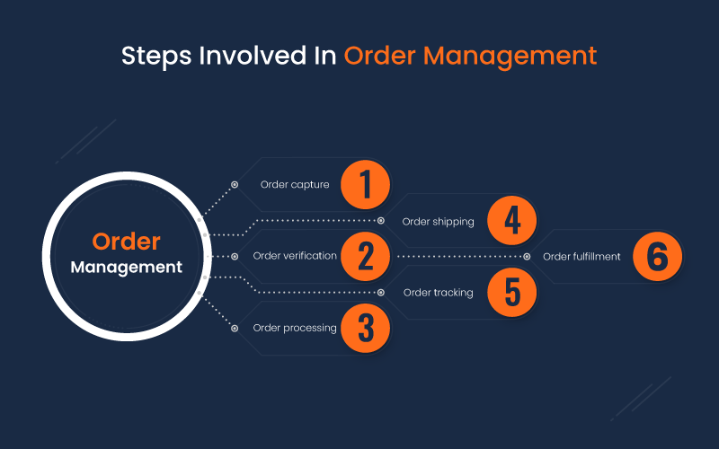
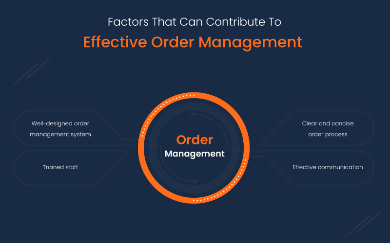

Oh, Life seems easy, everything today happens in clicks and swipes. Where every single order is linked in the lineage. But is an Order management system only that? Not, it handles everything from stock and inventory management to analyzing customer satisfaction. A perfect tool for the market but over time it needs progress and upgradation. Technology is a great helping hand here. Some new techniques and practices are evolving day by day. Machine learning in Order management is benefiting in multiple ways. Leap on the advantages and benefits of implying machine learning techniques in Order management.
What is Order Management?
Order management uses a set of processes that are a part of the supply chain. It usually consists of receiving orders, Tracking them and delivering them to the customers. Later receiving feedback and working on its improvements are also accounted for here. The order management process starts with the customer placing the order and ends when it is delivered. Usually interacts based on the requirements of the customer and fulfilling them.

How Has Technology Influenced Order Management So Far?
Technology has a profound impact on order management. Over the past years, the system was completely manual and time-consuming. Eventually, I was prone to errors. However today, technological invasions have swept errors, delays, and mistakes out of the stage. It's also evolving in a matter that sticks with the customer satisfaction and preferences making the Order management systems efficient and accurate.
- E-commerce made purchases and sales possible with a few taps. Allowing businesses to interact with audiences around the world excluding geographical limitations that significantly contribute to increasing orders and sales ratio.
- Online Ordering platforms are designed in a customer-friendly manner helping them place their orders easily via the app. This allowed businesses to reach out to almost every nook and corner of the world.
- Order Tracking Applications enable the business and customer to track and identify the exact location of the order placed and sent. This provides the customer with accurate information about the shipping process, gaining trust and faith in the business’s services.
- Order Management Software Order Management Software automates tasks involved in order management and helps the business manager stay at peace. And every process in the procedure is automated and in the system and provides time to focus on other major events such as marketing, customer services, and others.
In making order management, more efficient, accurate, and customer-friendly - technology has a major role to play. And contributed itself to improving business better from the base bottom and scraping it to the heights. The inhabitations of particular tools and accessories in the scene have defined the quality of Order management in a good manner.
- Using Barcodes and Scanners made it possible to quickly and accurately track inventories. Helped businesses avoid stockouts and made it easy for customers to pick the products they wish.
- RFID Tags are electronic tags tracking inventory levels and the movement of the product helping in supply chain management and reducing cost at maximum.
- Cloud computing systems made it possible for businesses to store and access data from anywhere in the world allowing businesses to improve in terms of order management processes and provide better customer experience.
- Big data analytics is used to analyze customer data, identify trends and patterns and evolve in them. Therefore providing a better customer experience.
On the whole, technology has given a positive vibe so far in the order management system to improve in terms of accuracy, efficiency, customer service, and a lot more!

Impacts Of Machine Learning In Order Management
Machine Learning today is one of the prominent forms of artificial intelligence that has a positive impact on technological adaptations and evolutions. This basically allows machines to learn things without explicit programming. It is used in a variety of industries, actually who not? Every sector today may have little influence on humans, while ML and AI manipulate in a major aspect as it is capable of understanding human requirements with not much effort.
And obviously, here in the scene welcoming Machine Learning into Order management. Yeah, it's been quite functioning, still here are some highlights to grab for business. ML in Order management does play different roles in the drama, making things pleasing, patient, and peaceful.
-
Demand Predictor
Machine Learning analyzes the history of data to give almost accurate predictions on demands and ensure the business is capable of producing The required inventory to hand it over to the customers on time and need. -
Inventory Optimizer
As it collects the data history, ML is capable of providing optimal inventory information for every product. This can be vitalized in cost reduction and concentrate on improving better customer services. -
Fraud Identifier
As a fraud identifier, Machine learning traces and tracks every bit of information and keeps the business guarded away from fraudulent activities, and also prevents such situations from happening in the system. -
Personal Assistance
Machine learning analyzes the customer data and responds based on their preferences. The information gathered is processed in the system to provide them with better assistance and suggestions. -
Order Automation
ML is used in automating orders management processes including such as order processing, shipping, and billing
Machine learning improves the overall performance of the business by contributing to the order management system. It's a powerful tool for improving business efficiency.

Challenges Of Incorporating Machine Learning In Order Management
- The quality of data collected through machine learning is important in every process stage. Its accuracy matters while the data is fed and fetched by the inputs given. Thai raises the chance of predictions at a higher rate.
- The order management models can be complex to understand while meeting their requirements. By choosing a convenient model, simplicity breaks the requirements.
- Sometimes ML models turn out to be biased giving inaccurate predictions. And here it's important to test the model for its favoritism and make changes accordingly.
Meanwhile, these issues can be sorted in the following ways.
- Cleaning data over a particular time period, this helps in eliminating the previous errors and inconsistent data.
- Utilizing an optimum ML model in order management, which is simple to understand and meets your requirements.
- Completely testing the model response for its accuracy and biased nature by altering combination inputs and data series. And correct accordingly.
Prominent Brands Using Machine Learning in Order Management
Amazon uses machine learning to predict product demand, and it analyzes the history of users in providing efficient recommendations to the users. And also help with inventory management in a vast ratio.
Walmart is huge, and the complications obviously rise in the inventory section as it's hard to manage a bulk number of items. And here machine learning comes in to smooth the process.
Netflix is founded for its suggestion system. And if you wonder where Machine learning comes into the scene then here it is. Thus expanding its users by providing impeccable user experiences.
EBay widely uses Machine learning techniques to identify fraudulent orders. This information is used to prevent further scams and financial losses.
Benefits Of Incorporating Machine Learning Into Order Management
-
Cost Cutting
Optimizes inventory levels, identifies fraudulent orders, and vitalizes time effectively. Brands can reduce costs in terms of order management. -
Accuracy On Par
By predicting demand and by providing personalized customer experience, you can improve the functioning of the brand. -
Improvement In Efficiency
Automating tasks that eventually reduce the manual requirements and intervention, a lot of time and human errors can be eliminated. -
Improve Customer Satisfaction
Customizing everything with the data traced, ML into order management helps in improving customer satisfaction effectively.
Eventually, Machine learning in Order management is also used to predict demand, manage demand over supply, trace fraud, and miscellaneous activities, and stay secure from financial glitches. Overall implying machine learning techniques in order management are highly helpful and useful in the progress in real-time.
The future of Order management
Machine learning is evolving and immersing in every sector. Order management is a common thing today, from grocery to granite, anything everywhere, it's ordered and placed in a matter of clicks. Sounding simple and easy, it undergoes various “If”, ‘and’ and ‘or’ cases. Incorporating Machine learning into an order management system is a perfect way to scrape efficiency in your business space.
We are working on creating impactful tech applications, especially in fintech, supply chain, real estate, and more employing the latest technology like Machine learning, AR/ VR, IoT, and anything new that pops in the way. Sparkout Tech has provided numerous solutions and is progressing in our development journey. Reach out to avail the most creative, effective, and simplified solutions for your business in any sector.
Lead Project Manager
Sivabharathy is a technical architect, technology enthusiast, and voracious reader. His visionary perspective has earned him opportunities to work with innovative projects in the computer software industry. He is an expert in PHP, JavaScript, NodeJS, Angular, Ethereum, Web3, Product Development, and Teamwork.